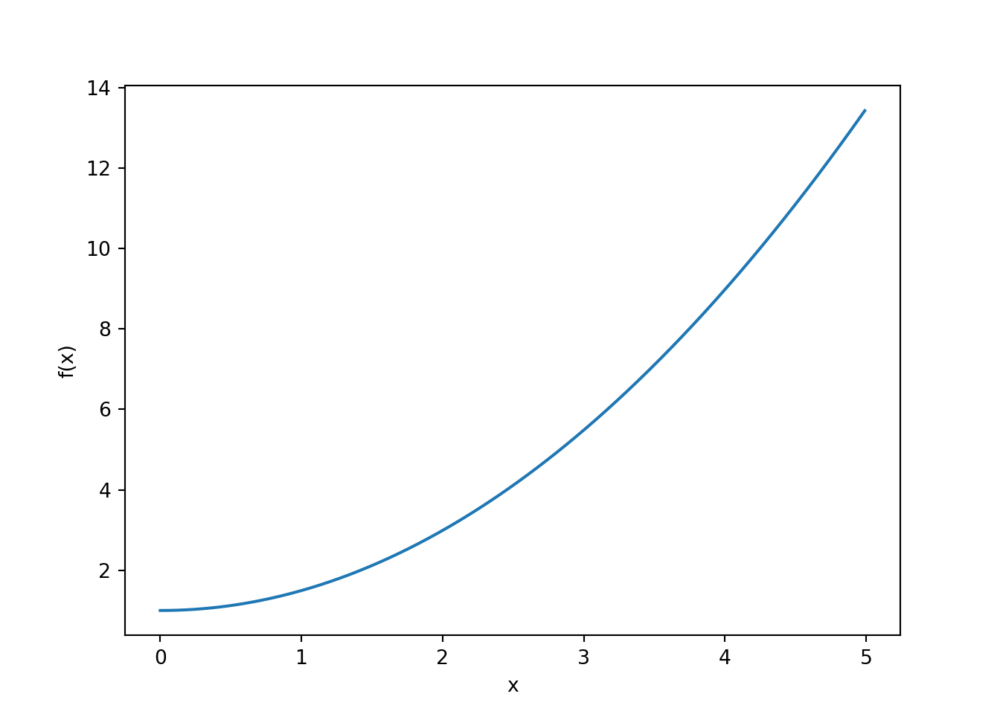

5 Intro to dynamical systems
5.1 Differential equations
The HH model and lots of other models we will encounter are ultimately expressed in differential equations.
A differential equation is essentially an equation that relates some function \(f(x)\) to its derivative \(\frac{d}{dx}f(x)\)
The derivative \(\frac{d}{dx}f(x)\) is the rate of change of the function \(f(x)\) with respect to the variable \(x\). If \(x\) changes by an infinitesimal amount, \(\frac{d}{dx}f(x)\) reports how much \(f(x)\) will change in response.
A generic differential equation is as follows:
\[\frac{d}{dx}f(x) = g(x)\]
You can read this in words as saying that the rate of change of \(f(x)\) with respect to \(x\) — given by \(\frac{d}{dx}f(x)\) — is described by some other function \(g(x)\).
To solve a differential equation, we need to find a definition for \(f(x)\) that makes the equation true.
For example, if \(g(x)=x\) then:
\[\frac{d}{dx}f(x) = x\]
- We can see that \(f(x) = \frac{1}{2}x^2\) solves the differential equation, because
\[ \begin{align} \frac{d}{dx}f(x) &= \frac{d}{dx}\frac{1}{2}x^2 \\ &= \frac{1}{2} \frac{d}{dx} x^2 \\ &= \frac{2}{2} x \\ &= x \end{align} \]
In general, the solution to any differential equation can be computed via integration \(f(x) = \int \frac{d}{dx} f(x) dx\).
However, in practice, the differential equations we will want to solve are too complex to solve using either intuition or by explicitly evaluating integrals.
5.2 Euler’s method
Euler’s method is a simple method to solve differential equations that can be applied in situations where a closed analytical solution cannot be easily obtained.
Euler’s method says this:
\[f(x_2) \approx f(x_1) + \frac{d}{dx} f(x) \Bigg\rvert_{x=x_1} \Delta x\]
In words, this says that the value of \(f(x_2)\) is approximately equal to \(f(x_1)\) plus how much it changed from \(x_1\) to \(x_2\).
The how much it was likely to change bit is computed by taking the derivative evaluated at \(x_1\) and multiplying by the total change in \(x\), given by \(\Delta x = x_2 - x_1\).
Here’s how to implement Euler’s method in
python:
import numpy as np
import matplotlib.pyplot as plt
# define the range over which to approximate fx
x = np.arange(0, 5, 0.01)
# initialise fx to zeros
fx = np.zeros(x.shape)
# Euler's method requires we specify an initial value
fx[0] = 1
for i in range(1, x.shape[0]):
# df/dx = x
dfxdx = x[i-1]
# delta x
dx = x[i] - x[i-1]
# Euler's update
fx[i] = fx[i-1] + dfxdx * dx
# plot solution
# It should look like 1/2 x^2
fig, ax, = plt.subplots(1, 1, squeeze=False)
ax[0, 0].plot(x, fx)
ax[0, 0].set_ylabel('f(x)')
ax[0, 0].set_xlabel('x')
plt.show()